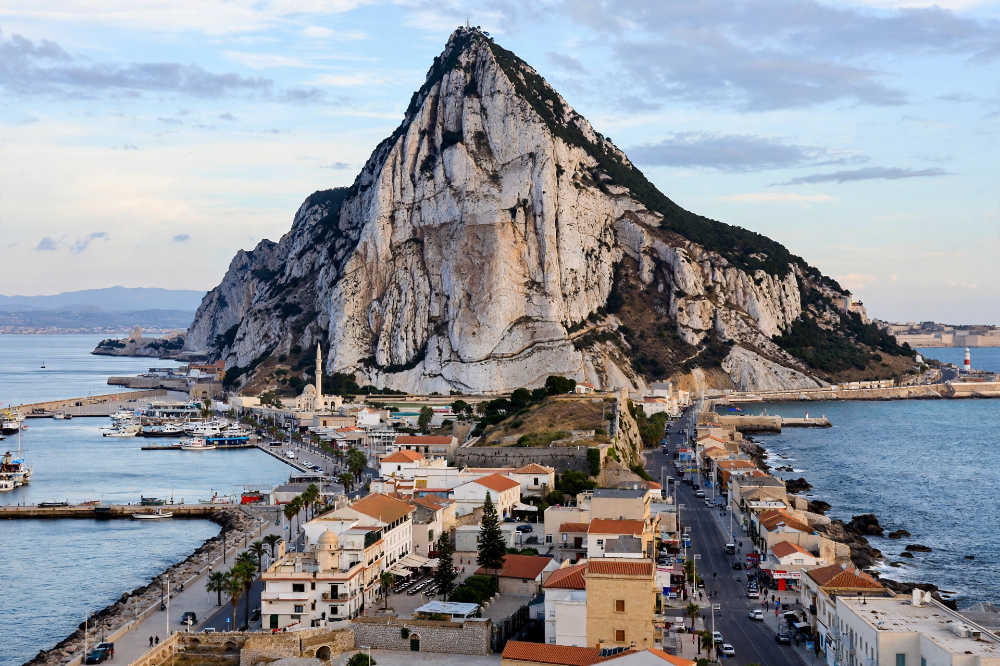

[Image placeholder: The Rock of Gibraltar from the Mediterranean side]| Status | British Overseas Territory |
|---|---|
| Population | About 34,000 |
| Area | 6.8 km² |
| Landmarks | Rock of Gibraltar (426 m) |
**Gibraltar** is a British Overseas Territory at the southern tip of the Iberian Peninsula, dominated by the Rock of Gibraltar, a 426 m limestone ridge. It guards the strait where the Atlantic meets the Mediterranean — one of the ancient Pillars of Hercules. Captured by an Anglo-Dutch force in 1704 during the War of the Spanish Succession and ceded to Britain 'in perpetuity' by the Treaty of Utrecht (1713), it has been claimed by Spain ever since.
Gibraltar's roughly 34,000 Gibraltarians — of Genoese, Maltese, Spanish, Portuguese and other descent, speaking English and the Llanito vernacular — have overwhelmingly voted to remain British (99% in 1967; 98.97% in 2002 against shared sovereignty). The territory is famous for its Barbary macaques, Europe's only wild primates, its airport whose runway crosses the main road into Spain, and its finance, shipping and online-gambling economy.
Known to Phoenicians and Romans (Mons Calpe), fortified by the Moors from 711 (the name derives from Jabal Ṭāriq, 'mountain of Tariq'), Gibraltar endured the Great Siege of 1779–83 and served as a vital naval base in both world wars; its population was evacuated in 1940. Spain closed the land border entirely from 1969 to 1985.
Gibraltar voted 96% to remain in the EU in 2016. After years of negotiation, the UK, Spain and the EU reached an agreement in principle in 2025 to remove the land border's physical checks and integrate Gibraltar into Schengen-style arrangements while leaving sovereignty untouched.